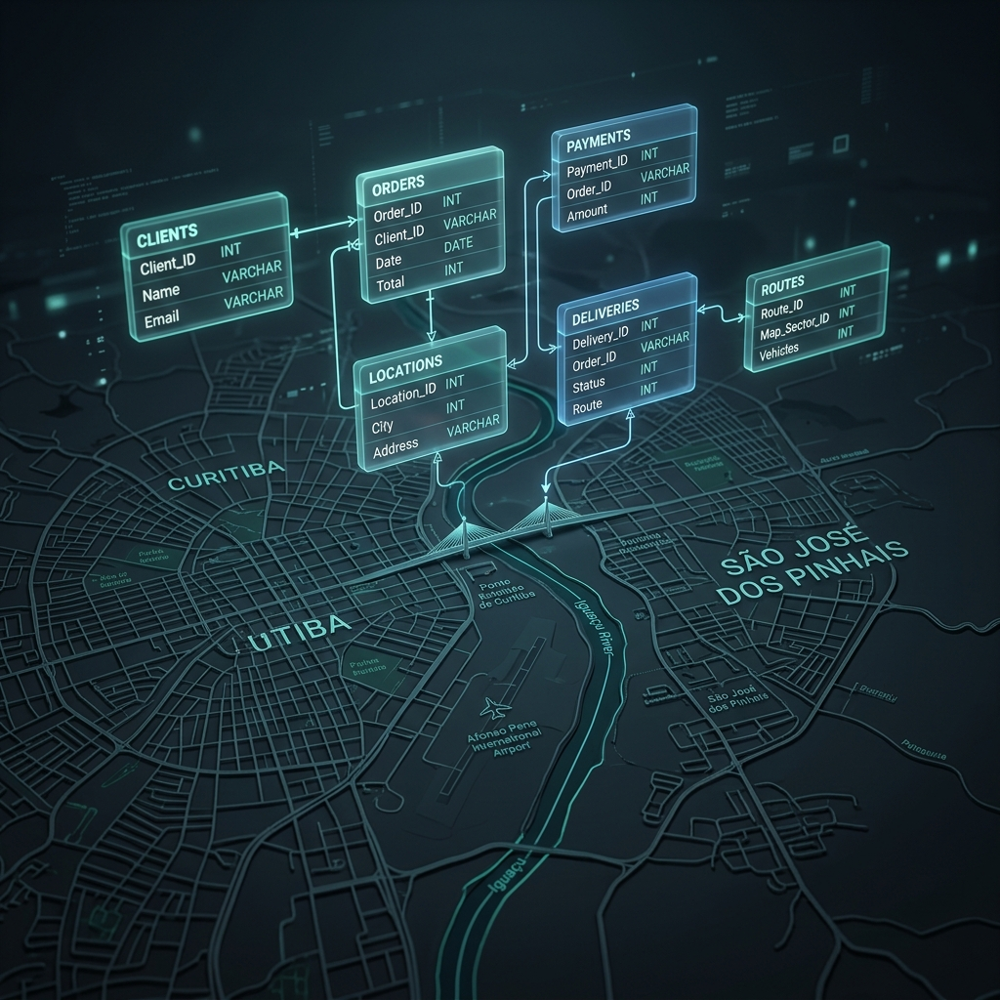

Série: As Redes Invisíveis — Episódio 5
O MySQL Metropolitano e o Nó Político

Tempo de leitura: 8 minutos
Às 7h42 da manhã, o ônibus 6020 aparece no painel eletrônico do terminal metropolitano como "a 3 minutos". Mas ele não existe. O motorista faltou, a escala não foi sincronizada e o sistema de rastreamento — o tal "MySQL metropolitano" — continua jurando ao passageiro sob a garoa fria que a viagem está vindo.
Após analisarmos os oligopólios do asfalto no episódio anterior, deparamo-nos com o nó mais resistente da mobilidade urbana: a integração de dados metropolitana. Na Região Metropolitana de Curitiba, o impasse de integração entre a capital e a vizinha São José dos Pinhais expõe um paradoxo vergonhoso. Do ponto de vista estritamente técnico da engenharia de software, conciliar financeiramente as tarifas e passagens de ambos os sistemas é um desafio elementar. Um banco de dados relacional clássico de código aberto operando junto a um front-end simples seria plenamente capaz de auditar, consolidar e repartir a receita diariamente de forma segura. A trava que impede isso de acontecer é estritamente política.
1. A Simplicidade do Modelo de Dados
Para o volume de dados gerado pela bilhetagem eletrônica de Curitiba (URBS) e da região metropolitana (Metrocard), o processamento exigido é extremamente leve. A transação da catraca gera registros de poucos bytes:
CREATE TABLE transacao_catraca (
id_transacao INT AUTO_INCREMENT PRIMARY KEY,
id_cartao VARCHAR(50),
data_hora TIMESTAMP,
id_linha INT,
valor_pago DECIMAL(10,2),
sistema_origem ENUM('URBS', 'METROCARD')
);No final do dia, um script SQL básico executando consultas de agrupamento e soma resolveria a câmara de compensação financeira, indicando qual consórcio deve repassar valores de saldo para o outro, equilibrando as integrações bidirecionais.
2. O "MySQL Metropolitano" e a Fragmentação Deliberada
O MySQL Metropolitano é o banco de dados invisível que decide onde você pode ir, quanto tempo vai esperar no ponto e quanto vai pagar pela tarifa. Ele não é um software único e centralizado — é a soma fragmentada de planilhas locais, contratos de concessão, cadastros legados e sistemas fechados que deveriam conversar entre si, mas são mantidos propositalmente mudos.
Essa fragmentação deliberada produz "fantasmas" diários nas catracas e painéis: linhas fantasma que constam na tabela mas nunca rodam, frotas fictícias infladas para justificar repasses governamentais e horários virtuais que ignoram a realidade caótica do trânsito metropolitano. É a tecnologia operando não para otimizar o fluxo de passageiros, mas para validar relatórios burocráticos.
3. Por que a Política Bloqueia a Tecnologia?
Se a infraestrutura de dados é barata e simples, por que a integração não ocorre de forma transparente? A transparência técnica é a maior inimiga dos arranjos financeiros protegidos. A implantação de um banco de dados unificado esbarra em três barreiras de interesse político:
- A Auditoria das Planilhas de Custo: Para calibrar as tarifas técnicas de repasse, as empresas de ônibus teriam que abrir suas contabilidades detalhadas em tempo real (custo do diesel, folhas de pagamento, desgaste de pneus). Hoje, essas informações são entregues em complexos PDFs estáticos, permitindo distorções políticas nas negociações de subsídios fiscais.
- A Guerra do "Float" Bancário: O dinheiro que os usuários recarregam antecipadamente em seus cartões de transporte acumula saldos milionários que rendem juros diários nos bancos (o float financeiro). Unificar o sistema exige decidir quem fica com a custódia dessa rentabilidade oculta, gerando disputas intensas entre a URBS e a Metrocard.
- A Soberania Geográfica: Curitiba trata a gestão do seu sistema de canaletas exclusivas e biarticulados como a joia da coroa do urbanismo local. Dividir o controle decisório com o governo estadual (Amep) é visto pelos gestores da capital como uma perda inaceitável de controle político.
Quando a agência reguladora estadual tenta exigir a transmissão de dados GPS em tempo real, os consórcios de ônibus alegam inviabilidade tecnológica e ameaçam abandonar a concessão metropolitana. Quando as empresas pressionam por reajustes alegando alta nos custos operacionais, o Executivo injeta subsídios diretos sem auditoria independente das tabelas SQL. O resultado é um nó cego: ninguém solta a corda, e a população fica espremida entre catracas ineficientes.
Marcos, motorista metropolitano há 18 anos, conhece bem essa farsa operacional. O painel da garagem frequentemente registra seu veículo como "em operação" e "em trânsito normal" enquanto o motor está aberto na oficina esperando reposição de peças. "É tudo mentira nos computadores deles", lamenta Marcos. "Mas é a mentira oficializada que fecha a planilha no fim do mês e garante a tarifa técnica."
4. A Rede Invisível do Monopólio
A rede invisível do transporte metropolitano não é feita de cabos de fibra óptica ou antenas de celular — é feita de dados ruins, contratos opacos de float financeiro e decisões políticas fechadas que ninguém vê. O problema nunca foi a capacidade técnica de escrita e leitura de queries SQL. O sistema não funciona de forma integrada justamente porque a falta de transparência técnica beneficia financeiramente as empresas. A opacidade e a fragmentação do dado são mantidas por design.
O MySQL Metropolitano não é apenas um banco de dados ruim — é um espelho de como o poder e o dinheiro circulam pela cidade nas sombras dos sistemas oficiais.
Dicionário de termos técnicos (Glossário)
Termos de engenharia de dados e bilhetagem discutidos:
- MySQL
- Um sistema de gerenciamento de banco de dados relacional de código aberto muito popular, utilizado para armazenar dados estruturados de forma robusta e leve.
- Câmara de Compensação
- Mecanismo financeiro que calcula as obrigações mútuas entre diferentes participantes de um sistema, apurando o saldo líquido a ser transferido entre eles.
- Float Financeiro
- O saldo financeiro mantido em contas bancárias gerado pela compra antecipada de créditos de transporte antes do uso efetivo pelo passageiro, que gera rendimentos por juros.
- Bilhetagem Eletrônica
- O sistema de pagamento de passagens por meio de cartões inteligentes ou dispositivos digitais que substituem a moeda física nas catracas.
- Amep (antiga COMEC)
- Agência de Assuntos Metropolitanos do Paraná. Órgão estadual responsável por coordenar políticas públicas metropolitanas, incluindo o transporte intermunicipal.
No próximo episódio, na conclusão desta série, seguiremos para as fissuras de comunicação e as redes de caronas comunitárias criadas de forma orgânica onde o asfalto controlado do Estado falhou.
— Fim do Episódio 5. Continua no Epílogo “A Descentralização do Silêncio e a Lei das Duas Gerações”.